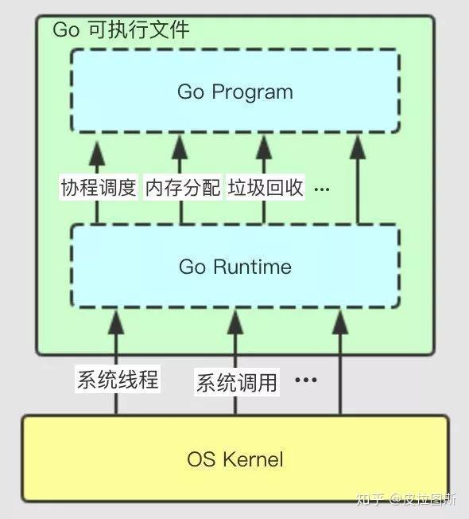
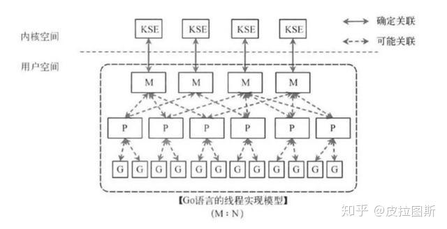
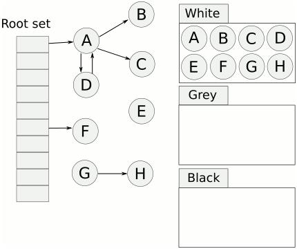
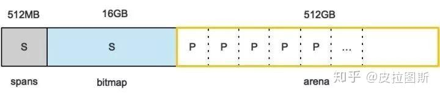

Go Runtime 簡析
Golang 為什麼效率高？goroutine 是怎麼執行的？Go runtime 是什麼？本文從調度、GC 與記憶體配置三個角度做快速整理。
Go 的 runtime 在語言中的地位有點像 Java 的虛擬機器，但它本身不是虛擬機器。Go 程式會被編譯成對應平台的原生可執行檔，執行時不需要額外安裝 VM。原因在於編譯階段已經把 runtime 的關鍵能力一併連結進去。
Go runtime 的核心功能包括：
- goroutine 調度與並發執行模型
- 垃圾回收（GC）
- 記憶體配置
- 支援
pprof、trace、race等執行期能力 - 實作
channel、map、slice、string等內建型別
下圖說明 Go 程式、runtime、可執行檔與作業系統之間的關係。相較於 Java 需要仰賴 JVM，Go 的可執行檔已經包含 runtime，因此可以直接與作業系統互動，並提供調度、記憶體管理與垃圾回收能力。

協程調度模型
調度一直是作業系統的核心能力。從單工、多工、併發到平行，再到今天的分散式調度，整個演進都在追求更高的資源利用率。Go 的特別之處在於它把一部分調度責任從作業系統抽回 runtime，自行管理 goroutine。
Go 原生支援 goroutine。它比傳統執行緒更輕量，調度主要由 runtime 負責，這也是 Go 在高併發場景下效率突出的原因之一。
Go 在協程執行上採用的是 GMP 調度模型。核心是把 goroutine、邏輯處理器與系統執行緒做 M:N 對映，以降低切換成本並提升 CPU 利用率。
- G：goroutine，保存執行上下文的輕量級任務。
- P：processor，邏輯處理器，提供執行 goroutine 所需的本地執行環境，例如
mcache與本地任務佇列。 - M：machine，真正對應到作業系統執行緒的運算資源。
- 全域佇列（Global Run Queue）：尚未綁定到某個 P 的 goroutine 會放在這裡。
- 本地佇列（Local Run Queue）：每個 P 都有自己的佇列，可優先執行本地 goroutine。
- sysmon：runtime 背景監控協程，定期檢查 goroutine 與 processor 狀態，避免長時間佔用 CPU。

垃圾回收（GC）
垃圾回收是語言執行期的重要能力，直接影響程式的穩定性與長時間運作表現。像 Java、Python 都有自己的垃圾回收機制，Go 也不例外，因此開發者不需要像 C 或 C++ 那樣手動管理大部分記憶體生命週期。
常見垃圾回收算法
- 引用計數（Reference Counting）：每個物件都維護引用次數，當引用數降到 0 時就能回收。Python 主要使用這種方式，但需要額外處理循環參照問題。
- 標記清除（Mark and Sweep）：從根物件出發追蹤所有可達物件，未被引用的物件稍後再清除。這種方法能處理循環參照，但常伴隨 STW（Stop The World）成本。
- 複製收集（Copying Collection）：把記憶體分成兩塊，每次只使用其中一塊，回收時把存活物件複製到另一塊，以減少碎片並整理空間。
Go 的三色標記法
Go 的 GC 建立在標記清除法之上，並透過三色標記與寫屏障降低 STW 對延遲的影響。
三色標記會把物件分成白、灰、黑三種狀態：
- 白色：尚未被存取的物件，可能成為回收目標。
- 灰色：已被存取，但其參照的子物件還沒掃描完成。
- 黑色：已被存取，且其子物件都已完成掃描。
典型流程如下：
- 起始時所有物件都是白色。
- 從 root 出發，把可達物件標記成灰色。
- 逐步掃描灰色物件，將其參照到的物件標記成灰色，自己轉成黑色。
- 當灰色佇列清空後，剩下的白色物件就是不可達物件，可進入回收階段。
相較於傳統標記清除，三色標記能把大部分標記工作改成與應用程式併行執行，因此 STW 時間更短。
寫屏障
標記與程式執行併行時，若黑色物件新增了一個指向白色物件的參照，就可能出現誤回收。寫入屏障的作用，就是在記憶體寫入時維持三色不變性，避免黑色物件直接持有未被正確追蹤的白色物件。
GC 觸發條件
- 當前記憶體配置量達到觸發比例。
- 一段時間內沒有發生 GC 時，runtime 會主動觸發。
- 手動呼叫
runtime.GC()。

記憶體配置
TCMalloc 概念
TCMalloc（Thread Caching Malloc）是 Google 為 C/C++ 場景設計的高效記憶體配置器。它透過多級快取降低鎖競爭，而 Go runtime 的記憶體配置設計也借鏡了這種分層管理思路。
Go 記憶體配置概念
Go 程式啟動後，會先向作業系統申請一段虛擬位址空間，再由 runtime 自行切分與管理。整體可分成三個主要區域：spans、bitmap、arena。
- arena：堆區，動態配置的物件主要位於這裡。runtime 會把記憶體切成 8 KB 頁，並組合成
mspan作為基本管理單位。 - bitmap：記錄堆中哪些位置存放物件、物件是否含有指標，以及 GC 標記資訊。
- spans：保存
mspan的指標，讓 runtime 能快速定位實際管理的記憶體區塊。
